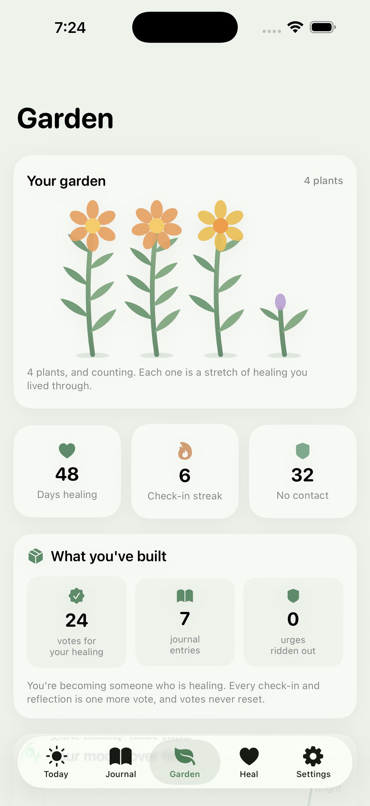
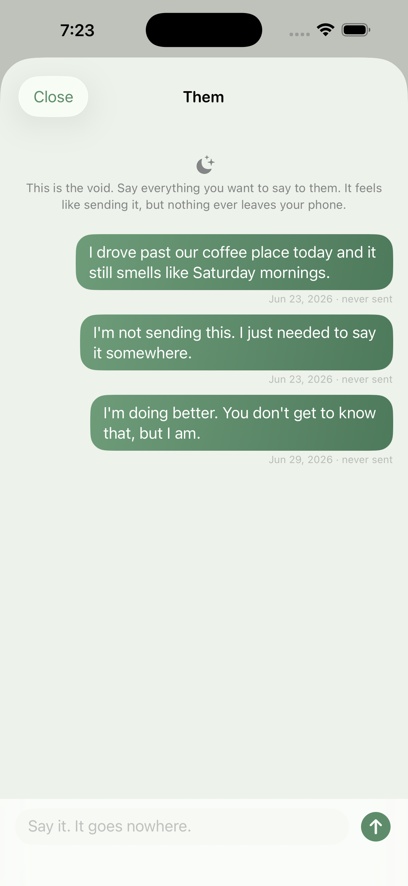
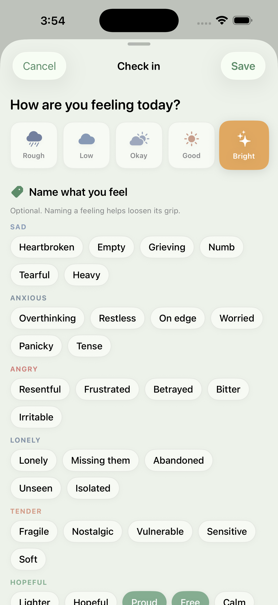
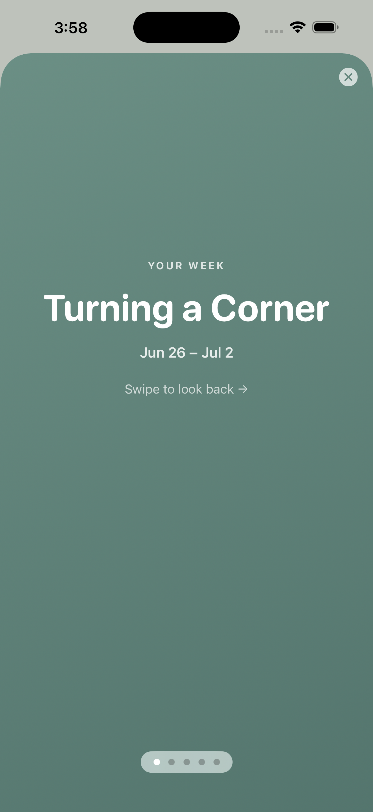

HeartKeep is a gentle space to find your way back to yourself, one honest day at a time. Daily check-ins, journaling, and a garden that grows as you heal.
Download on the App StoreEvery other breakup app sells you a weekly subscription and a relapse-counting streak. HeartKeep is built to be calm, private, and genuinely kind.
Every stretch of healing you get through grows a new plant. Months later, you have a whole garden that shows how far you've come.
Guided prompts for every stage of grief, plus a private place to say what you never got to send.
One tap to log how you feel, then name the exact emotion. Naming it helps loosen its grip.
A "before you reach out" grounding tool, calming breathing, and warm, realistic affirmations.
Turn on a daily Bible verse and a quiet space to pray. Entirely optional, off by default.
100% on your iPhone. No account, no cloud, no tracking. Lock it behind Face ID if you like.
Designed to feel like a deep breath.




We're here to help, and we read every message.
Questions, feedback, or an idea for HeartKeep? Email minieriapps+heartkeep@gmail.com and we'll get back to you.
HeartKeep is a self-care tool, not a substitute for professional help. If you're struggling, please reach out to a qualified professional or a crisis line such as 988 (Suicide & Crisis Lifeline, US). You deserve real support.
The short version: everything stays on your device.
Nothing. HeartKeep has no account, no login, and no backend. Your check-ins, journal entries, unsent letters, and settings live only on your iPhone.
Nothing, in normal use. No analytics, no ad SDKs, no trackers, no network requests for your content. The only exceptions are actions you explicitly take: exporting a file, tapping share, or making the optional one-time purchase (handled by Apple, who never shares your payment details with us).
Reminders are scheduled locally on your device. If you enable the app lock, authentication is handled entirely by iOS. We never see your Face ID data or passcode.
HeartKeep collects no data from anyone, including children.
Questions about privacy? Email minieriapps+heartkeep@gmail.com.